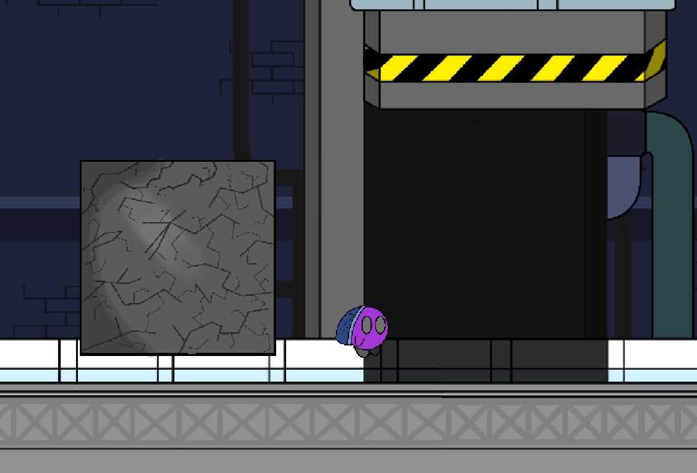

I created Shifting Shadows with 2 of my friends for a game jam. I joined this as an opportunity to learn more about how to better structure the development process, as this game jam required the submission of a game design document, as well as learning how to make HD art for a 2D game.
I did the programming and art, while my friends made the music, level design, and helped with playtesting.
You can find a web export of the game jam build of the game on the itch.io submission page here, as well as the game design document here.

